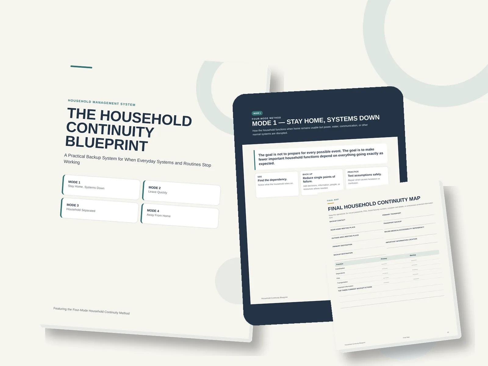

The Household Continuity Blueprint
Product profile · Marketplace data 2026-10-09 · Sales-page research 2026-10-09 · Categories: Uncategorized

Marketplace record
| Product type | Downloads |
|---|---|
| Price | $47.00 (Single payment) |
| Affiliate commission | 70% |
| Refund window | Per the vendor's sales page — check the official page before buying |
| Vendor | iconiclux (listed since 2026-09-28) |
| Marketplace stats* | Cart conversion — · cancel rate — · affiliate earnings/sale $32.90 |
* Vendor-side marketplace statistics reported by Digistore24; they depend on traffic quality and are not a forecast.
Vendor's marketplace description
Build a practical backup system for the people, information, routines, and resources your household depends on—without becoming a traditional “prepper” or spending hundreds of dollars on emergency gear.
From the vendor's sales page
Page title: The Household Continuity Blueprint
Meta description: Build a practical household continuity plan for outages, evacuation, separation, and temporary displacement—without the prepper mindset.
Headline
From Household Chaos to Calm, Confident Continuity
Build Calm Household Continuity Plans Before Life’s Unexpected Disruptions Arrive
Section headlines
- Take Command Before Chaos Calls
- Learn at Your Pace, Lead with Confidence
- One Download. Serious Household Value.
- Clarify Essential Information
- Prepare For Disruptions
- Strengthen Household Confidence
- Real Plans. Calmer Homes. Better Prepared.
- How To Get Started
- Create lasting change in your life... starting with one simple download!
- Frequently Asked Questions
Opening copy
Stop scrambling when life throws the unexpected at you The Household Continuity Blueprint gives you a clear, practical plan in one powerful download. Learn at your own pace, access it instantly, and pack your household with the confidence to handle disruptions before they happen.
Get instant access to The Household Continuity Blueprint and build a clear plan for protecting your people, priorities, and daily operations.
Move through practical guidance on your schedule, with focused steps that turn uncertainty into decisive household action.
Prices mentioned on the page: $47
Guarantee language found: “60” — always confirm the current terms on the official page before relying on it.
CTA buttons: “Download the Blueprint $47” · “Order Now - $0”
Research method: raw HTML fetch · 1291 words on page · quality: rich · researched 2026-10-09. Full research file (MD) ↗
Where to check it out
Read the vendor's full sales page (current price, guarantee terms and bonuses are listed there):
View official sales page
That link is an affiliate link — if you buy through it we earn a commission from the vendor at no extra cost to you.